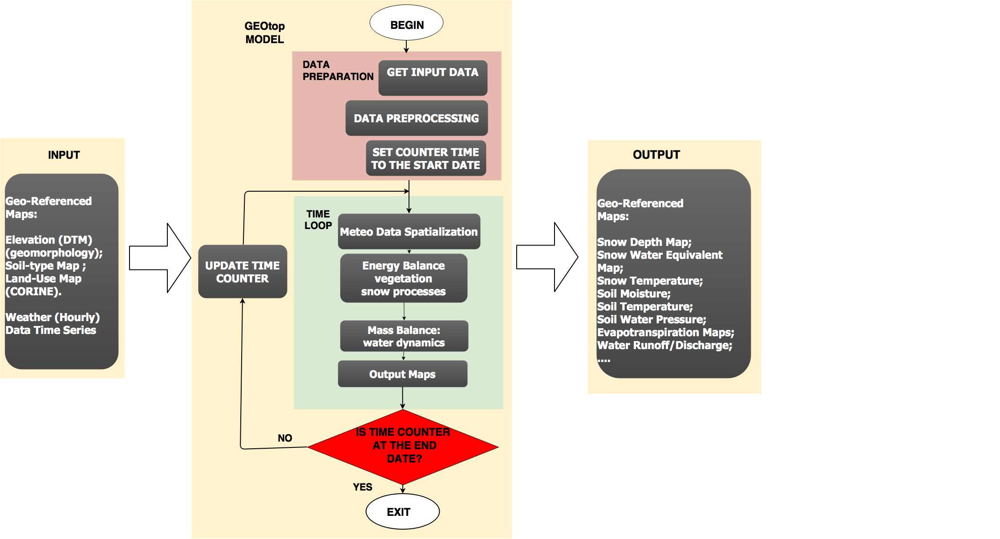

Physically-Based Distributed Hydrological Model
GEOtop 2.x/3.x is a distributed model of the mass and energy balance of the hydrological cycle. GEOtop is applicable to simulations in continuum in small or relatively large mountain catchments. GEOtop deals with the effects of topography on the interaction between energy balance (evapotranspiration, heat transfer) and hydrological cycle (water, glacier and snow).

Academic Credits
Endrizzi S., Gruber S., Dall’Amico M., Rigon R., GEOtop 2.0.: Simulating the combined energy and water balance at and below the land surface accounting for soil freezing, snow cover and terrain effects, Geosci. Model Dev., 2014
Rigon, R., Bertoldi, G., & Over, T. M. (2006). GEOtop: A Distributed Hydrological Model with Coupled Water and Energy Budgets. Journal of Hydrometeorology, 7, 371–388.
Click here to see a full list of publications concerning GEOtop Hydrological Model.
Users' Manual and Useful DocumentationUsers interested in GEOtop can download a users' manual here Further documentation on how to use the program, please follow the instruction on the source code documentation.
Mailing list
The community the following mailing list:
- GEOtopDev for developers and advanced users;
- GEOtopUsers for regular users.
Source Code and Licensing
This project has been and developed by a multidisciplinary community. The the source code has been released under open source GPL v3.0 license.